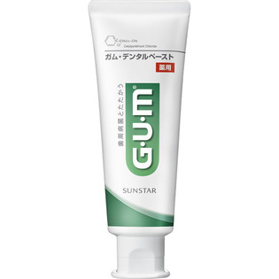

返回列表
产品名称：ガム・デンタルペースト

サンスター ガム・デンタルペースト １２０ｇ（医薬部外品）
メーカー サンスター
JANコード 4901616009684
商品の特徴
歯周病菌とたたかう
薬用
- 成分・分量
- [湿潤剤] ソルビット液、濃グリセリン、PG
[粘結剤] 結晶セルロース、ヒドロキシエチルセルロース
[清掃剤] プロピルジメチルオクタデシルアンモニウムクロリド結合無水ケイ酸(バイオニウム)
[発泡剤] アルキルグリコシド
[香味剤] 香料(ハーブミントタイプ)、サッカリンNa
[安定剤] 酸化Ｔｉ
[薬用成分] フッ化ナトリウム(フッ素)、塩化セチルピリジニウム(殺菌剤CPC)、グリチルリチン酸2K(抗炎症剤GK2)
[清掃助剤] ヤシ油脂肪酸アミドプロピルベ
- 用法及び用量
- 120g